VISUALIZING AND UNIFYING IMPORTANT SUMMATION FORMULAS
|
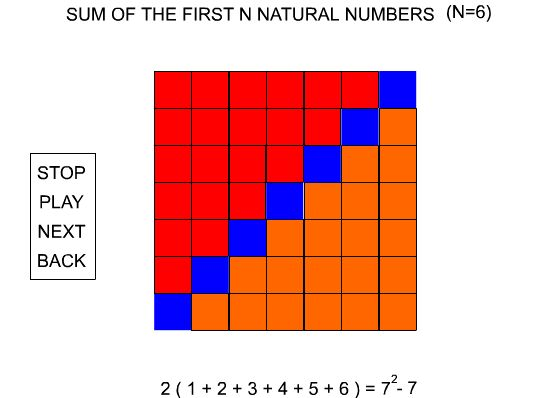
|
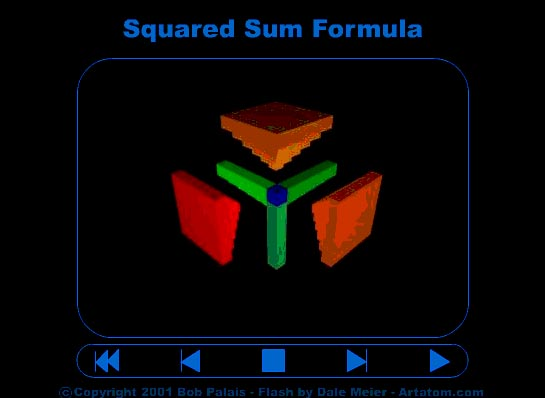
|
This page presents the summation formulas for the sum of the whole numbers less than or equal to n and the sum of
the squares of the whole numbers less than or equal to n in a unified and visual way. The methods used demonstrate
that the corresponding integration formulas may be derived as easily as corresponding differentiation formulas, from
the same source, the binomial expansion. These methods foreshadow the deeper connection between rates of change
and geometric boundaries made systematic in the Stokes' theorems and may be extended to any whole power. They
are part of a more general program to emphasize the duality and symmetry between differentiation and integration.
The formulas visualized at successive stages of the animation are:
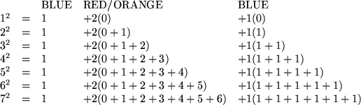
The general formula illustrated is:
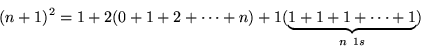
We then solve for the sum of the whole numbers less than or equal to n.
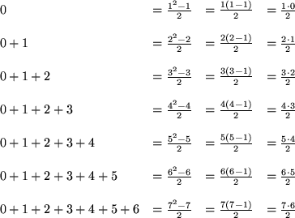
The general formula illustrated is:
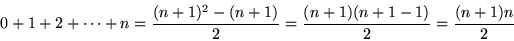
The final formula
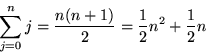
can be derived in several other ways (e.g., interpolation) and proven true for all n by induction. It may be used to compute the integrals
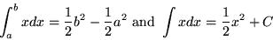
directly. This shows that both the 1/2 in these integration formulae and the 2 in the differentiation formula
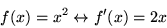
come from a common source, the second entry of the second row of Pascal's triangle.
SUM OF THE SQUARES OF THE FIRST N NATURAL NUMBERS (N=6)
The formulas visualized at successive stages of the animation are:
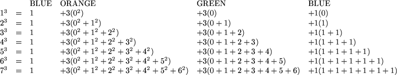
The general formula illustrated is:
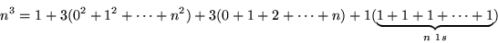
Substituting the formula for the sum of whole numbers less than or equal to n, we then solve for the sum of the squares of the whole numbers less than or equal to n.
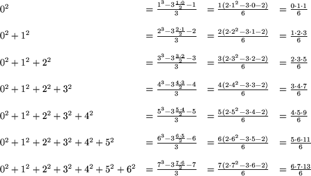
The general formula illustrated is:
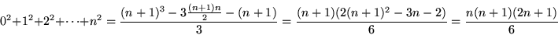
where we have used
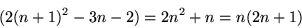.
The final formula
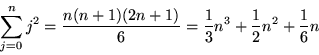
can be derived in several other ways (e.g., interpolation) and proven true for all n by induction. It may be used to compute the integrals
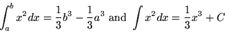
directly. This shows that both the 1/3 in these integration formulae and the 3 in the differentiation formula
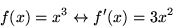
come from a common source, the second entry of the third row of Pascal's triangle.